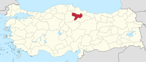

| Amasya | |
|---|---|
| Şehir | |
.jpg) |
|
 Amasya'nın Türkiye'deki konumu |
|
| Ülke Bölge İl |
Türkiye Karadeniz Bölgesi Amasya |
| İdare • Belediye başkanı |
Turgay Sevindi (CHP) |
| Yüzölçümü • Toplam |
1729 km² |
| Rakım | 411 m |
| Zaman dilimi | UTC+03.00 (TSİ) |
| Posta kodu Alan kodu Plaka kodu |
05000 358 05 |
| Resmî site Amasya Valiliği Amasya Belediyesi |
|